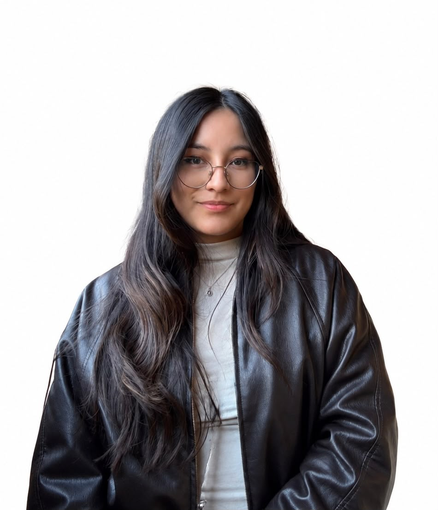
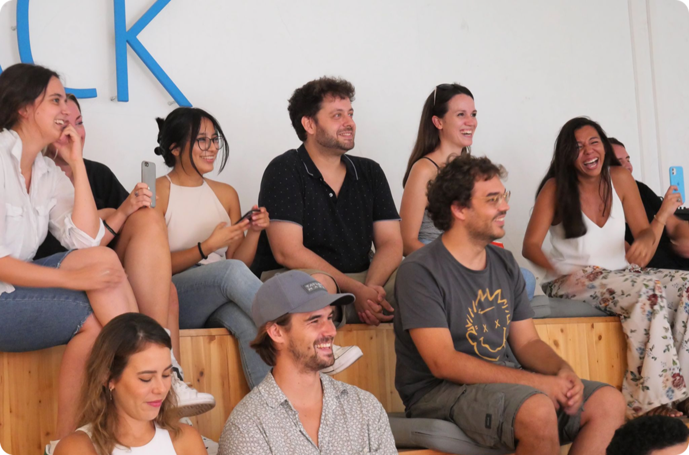
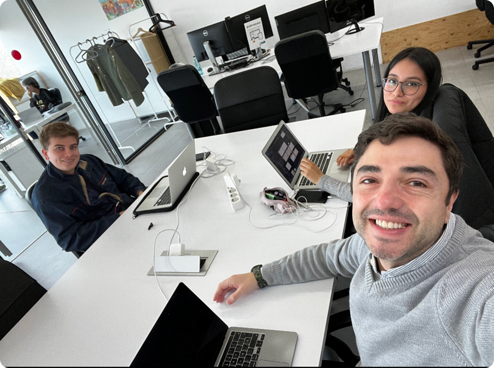
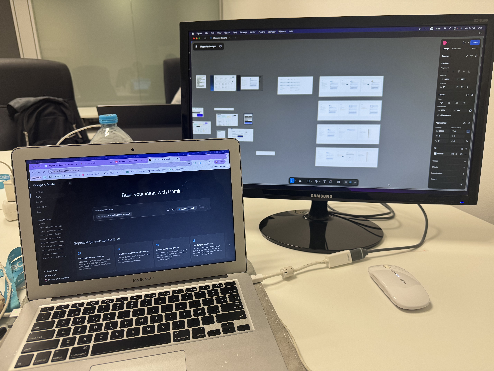

Aparte de diseñar, me encanta otros hobbies

Empezando como diseñadora UX/UI
Mi trayectoria empezó con una inmersión total en el diseño UX/UI a través de un bootcamp intensivo en Ironhack Barcelona. Durante dos meses a tiempo completo, trabajé en proyectos de complejidad creciente cada semana, bajo una metodología que simulaba entornos profesionales reales, equilibrando teoría y práctica.
Mi mayor aprendizaje fue el proyecto final, diseñar para una empresa real, lo que me permitió entender el impacto del diseño en el negocio desde el primer día, además de aprender a investigar con usuarios reales y a defender decisiones frente a un equipo.

De diseñadora UX/UI a Product Designer en una startup
En Magnettu, una startup en fase inicial, asumí el reto de evolucionar de diseñadora UI a Product Designer. Me adapté rápidamente a un entorno de alta incertidumbre donde el producto pivotaba constantemente, eso significó probar mucho, hacer entrevistas, y diseñar y rediseñar por completo más de una vez.
Pasé a encargarme desde la creación de nuevas ideas hasta el mantenimiento de funcionalidades críticas, la comunicación directa con clientes y con el equipo técnico, y la responsabilidad del design system, tanto en tokens como en la librería de componentes.
Esta experiencia me enseñó a manejar la IA como aliada en mis flujos de prototipado, a construir sistemas de diseño escalables, y a entender que un producto nunca está terminado, se mantiene, se itera y se mejora constantemente.

Mejorando como profesional
Hoy, mi foco está en seguir elevando el estándar de mis diseños a través del análisis de datos de uso real y el prototipado avanzado con IA. En paralelo, estoy desarrollando un proyecto personal desde cero para explorar nuevas verticales de producto, lo que me permite seguir experimentando fuera de mi zona de confort.
Me motiva enfrentarme a problemas complejos y encontrar soluciones que sean sencillas, rápidas de implementar y fáciles de usar.